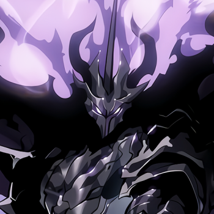
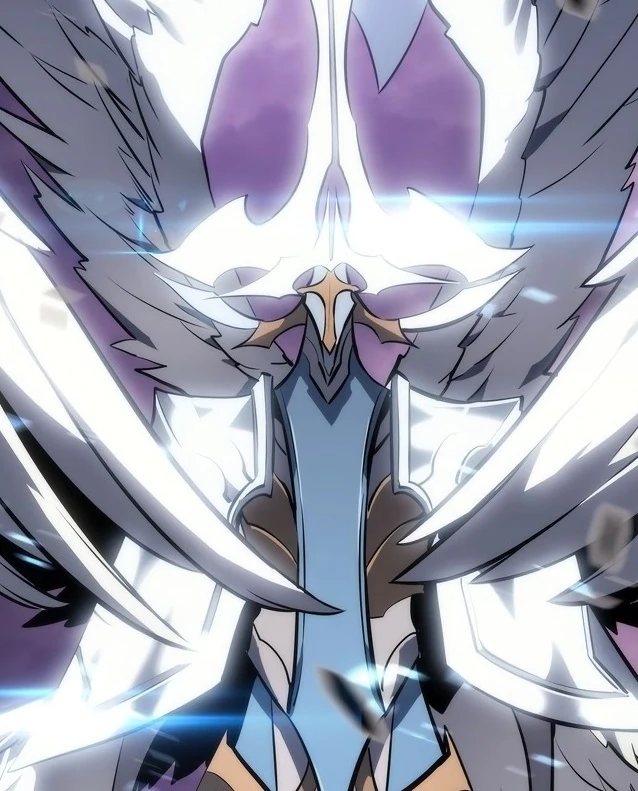

|
Personality Ashborn cared greatly about life and had a benevolent attitude towards humanity. He also had a profound desire for peace and was tired of the endless war between the Monarchs and the Rulers, leading him to eventually entrust both his ambitions and his powers to a human in hopes of putting an end to the bloodshed once and for all. At the same time, however, he was blindly loyal to the Absolute Being and continued to fight on the latter's behalf even after learning the truth behind his existence. Appearance Ashborn was a huge, muscular shadow with glowing flame-like purple hair, glowing purple eyes, two curved black horns, and sharp claws. He also wore jet-black armor and a long smoky black cloak, and wielded a pure black sword. As a Ruler, Ashborn was a burly white knight with large white wings, long silver hair, and glowing white eyes. He also wore silver robes with light tan armor and a grayish-blue cloak, and wielded a white sword with a light tan guard and a gray hilt. Powers and Abilities
Immense Strength: As the strongest Ruler, Ashborn possessed incomparably immense levels of physical
strength. As a testament to this, he was able to brutally overpower two Monarchs at once and pop
Baran's skull like a grape with one hand.
|

 |